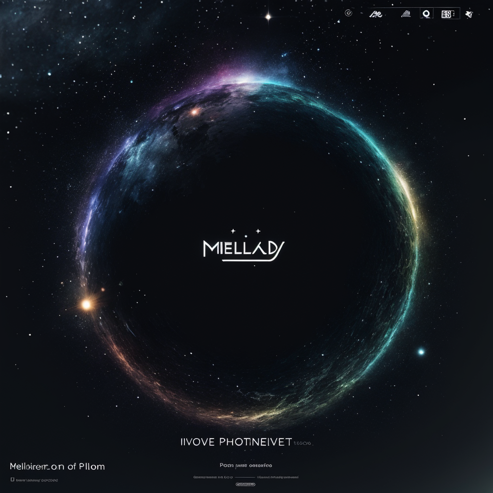

深入探索MelodySphere：音乐播放器的新星
作为一名资深的音乐爱好者，我一直在寻找能够提升我音乐体验的工具。最近，我尝试了一款名为MelodySphere的新型音乐播放器，并在这里分享我的使用体验。
外观设计
MelodySphere的外观设计简洁而时尚，拥有一个直观的用户界面，即使是初次使用的用户也能快速上手。播放器的图标和按钮大小适中，易于点击，颜色搭配也非常和谐，给人以视觉上的舒适感。

音质体验
音质是衡量音乐播放器好坏的关键因素。MelodySphere在这方面表现得非常出色。它支持多种音频格式，包括MP3、WAV、FLAC等，能够播放高分辨率的音乐文件，提供了丰富的音质选项。通过内置的均衡器，用户可以根据自己的喜好调整音效，无论是低音的深沉还是高音的清澈，都能得到很好的展现。
功能特点
-
智能播放列表 ：MelodySphere能够根据用户的听歌习惯自动生成播放列表，让我总能发现新的音乐惊喜。
-
社交分享 ：它还具备社交分享功能，可以轻松地将我喜欢的歌曲或播放列表分享到社交媒体，与朋友们一起享受音乐。
-
音乐识别 ：内置的音乐识别功能，只需几秒钟就能识别出正在播放的歌曲信息，非常实用。
-
离线播放 ：支持离线播放，即使在没有网络的情况下，也能享受音乐。
用户界面
MelodySphere的用户界面设计得非常人性化。它的播放控制简洁明了，歌曲信息一目了然。搜索功能也非常强大，可以快速找到我需要的音乐。
兼容性
这款播放器与多种操作系统兼容，无论是Windows、macOS还是Linux，都能完美运行。此外，它还支持多种设备，包括智能手机、平板电脑和电脑。
总结
经过一段时间的使用，我认为MelodySphere是一款非常出色的音乐播放器。它不仅提供了卓越的音质体验，还拥有丰富的功能和友好的用户界面。如果你是音乐爱好者，MelodySphere绝对值得一试。
评论
"非常感谢@MelodySphereUser分享这篇详细的测评。我最近也在寻找一款新的音乐播放器，MelodySphere听起来像是一个很好的选择。我特别喜欢它的智能播放列表功能，这对我来说是个很大的吸引力。不过，我很好奇它的电池续航能力如何？在移动设备上使用时，这通常是我最关心的问题之一。期待更多的用户反馈！"
作者：@MusicLover88 - 2024-06-02"作为一个技术爱好者，我对MelodySphere的音质体验和兼容性印象深刻。尤其是它支持多种音频格式和操作系统这一点，显示了开发者对产品的深思熟虑。不过，我更关心的是它的用户隐私政策和数据安全措施。在当前的数字时代，保护用户数据至关重要。希望@MelodySphereUser或者开发者能分享更多关于这方面的信息。"
作者：@TechGuru42 - 2024-06-03